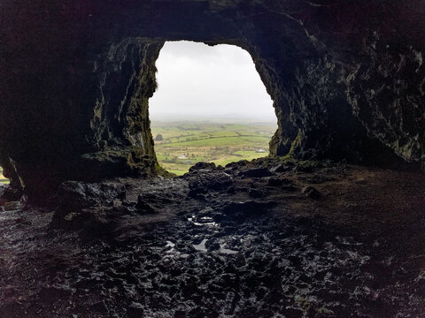
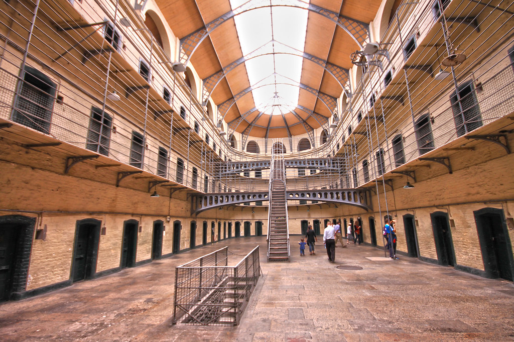
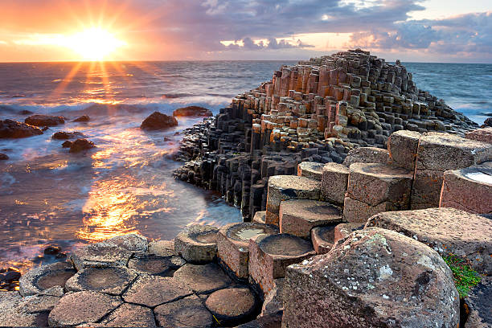

Croagh Patrick
Croagh Patrick is Ireland's holy mountain and stands at a height of 764m.
Commonly known as "The Reek", it is an important site for pilgrimage.
Located on the Atlantic coast only a 10 minute drive from the scenic town of Westport.
Only a 40 minute drive from Knock Airport.
Fantastic views of Clew Bay and a C20th church at the summit.
Located in the village Murrisk surrounded by many pubs / restaurants
Read More....

Caves of Kesh
Series of limestone caves situated in Co.Sligo.
Only a 20 minute walk up Keshcorran Hill
Provides a stunning photo-opp at sunrise and sunset.
Ideal place to witness limestone structures
Only a 15 minute drive from Sligo Town.
30 - 40 minute drive to Knock Airport.
Read More....

Kilmainham Gaol
Located in the heart of Dublin City
Retired prison turned museum
First opened in 1796
Held Irish political prisoners, such as the signatories of the 1916 Proclamation
Perfect day trip to learn about Ireland's fight for freedom
Must purchase tickets for a tour of the gaol
Read More....

Giants Causeway
UNESCO world heritage site
Located in Co.Antrim
Minutes away from Dunluce Castle & Carrick-a-Reed rope bridge
Over 40,000 hexagonal basalt columns
Formed over 60 million years ago
Steeped in Irish folklore, such as the story of Fionn mac Chumhaill
Read More....
Top Visitor Attractions
| Position |
Name |
Location |
| 1 |
Guiness Storehouse |
Dublin City |
| 2 |
Cliffs of Moher |
Co.Clare |
| 3 |
Book of Kells |
Dublin City |
| 4 |
Titanic Museum |
Belfast |
| 5 |
City Walls |
Derry City |
| 6 |
Blarney Castle |
Co.Cork |
| 7 |
Powerscourt Estate |
Co.Wiclow |
| 8 |
Giant's Causeway |
Co.Antrim |
| 9 |
Ulster Museum |
Belfast |
| 10 |
Kylemore Abbey |
Co.Galway |